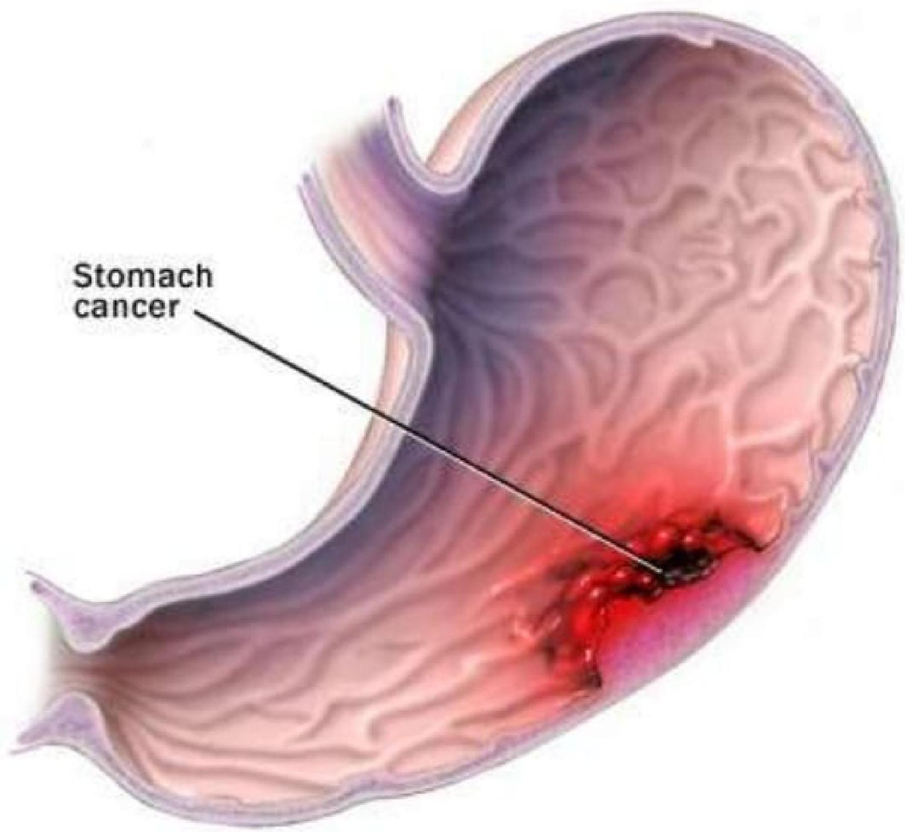
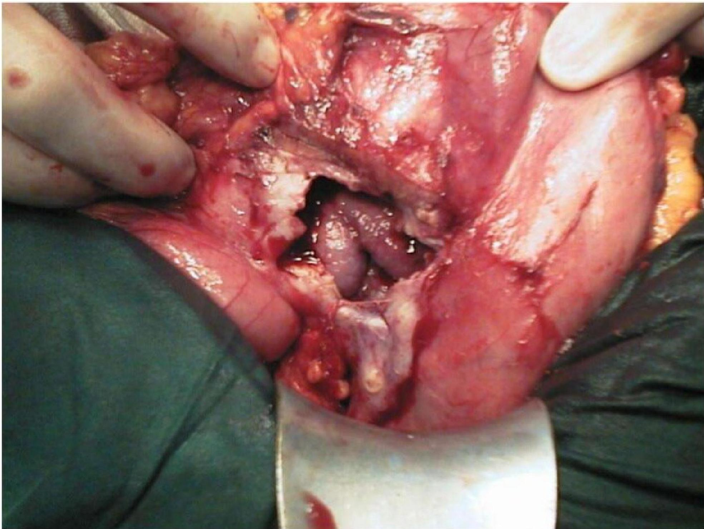
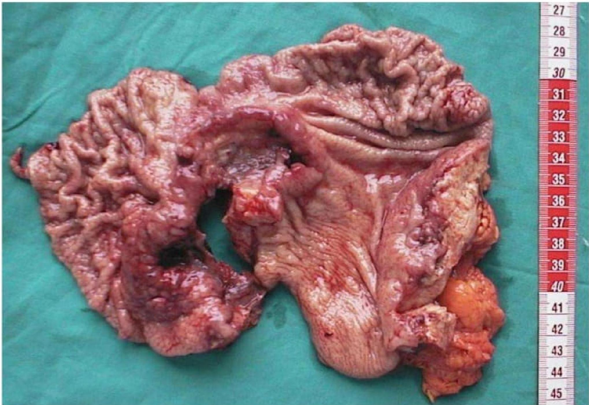
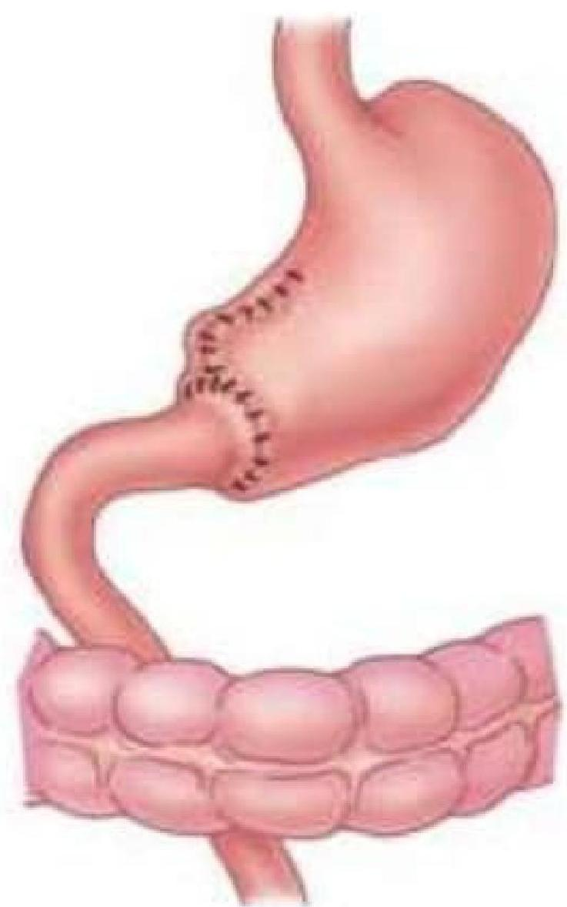
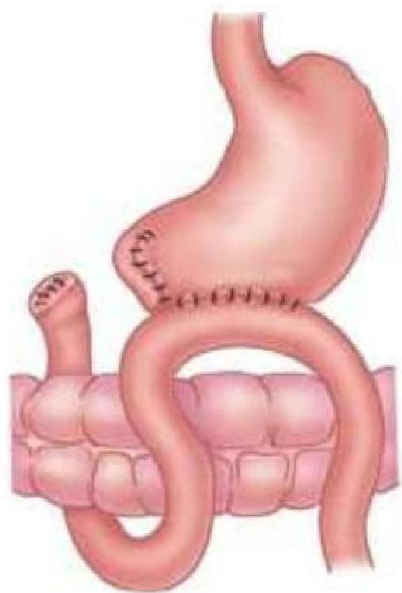
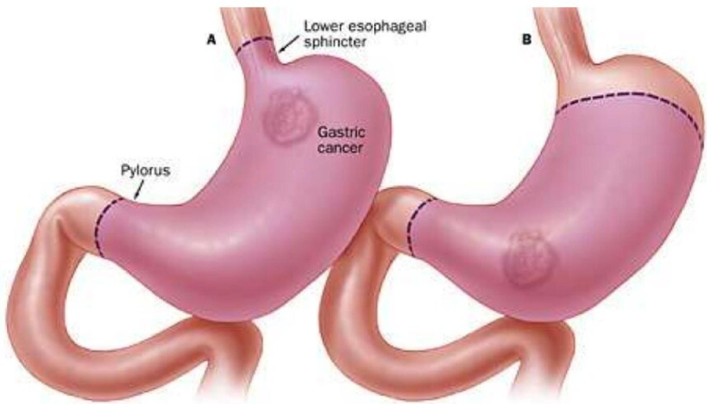
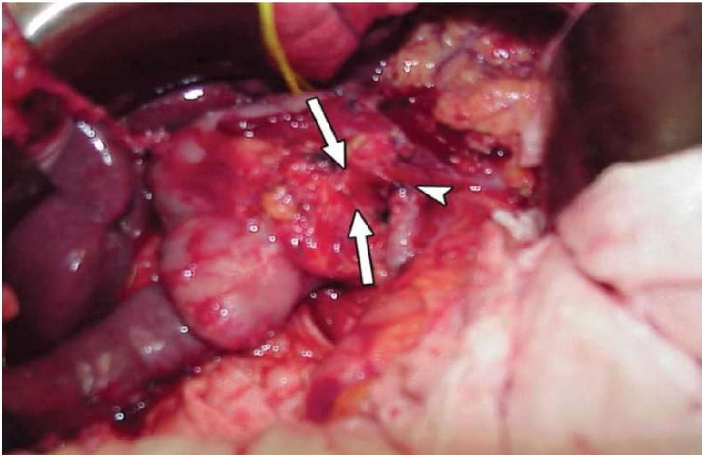
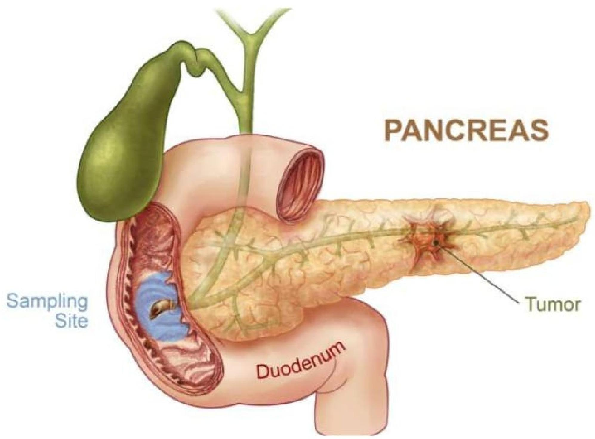
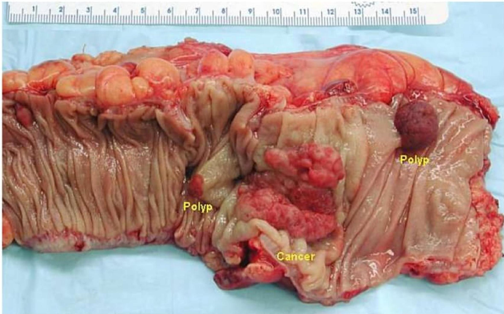

🍽️
Topic 09
Gastrointestinal Cancers
01
Gastric Cancer



Risk Factors
- Diet high in complex carbohydrates, grains and salt, and low in fresh, green leafy vegetables and fresh fruit
- Smoking
- Alcohol ingestion
- The use of nitrates
- History of gastric ulcers
Assessment
- Fatigue
- Anorexia and weight loss
- Nausea and vomiting
- Indigestion and epigastric discomfort
- A sensation of pressure in the stomach
- Dysphagia
- Anemia
- Ascites
- Palpable mass
Interventions
- Monitor vital signs, hemoglobin, hematocrit, and weight.
- Administer blood transfusions as prescribed.
- Assess nutritional status; encourage small, bland, easily digestible meals with supplements.
- Administer pain medications as prescribed.
- Prepare the client for chemotherapy, radiation, or surgical resection.

Surgical Management: Gastrectomy
Billroth I (Gastroduodenostomy)
Partial gastrectomy, with remaining segment anastomosed to the duodenum.

Billroth II (Gastrojejunostomy)
Partial gastrectomy, with remaining segment anastomosed to the jejunum.

Total Gastrectomy (Esophagojejunostomy)
Removal of the stomach with attachment of the esophagus to the jejunum or duodenum.

02
Pancreatic Cancer
Most common neoplasm affecting the pancreas. Prognosis is usually poor because symptoms typically do not occur until the tumor is large.
- Linked to: Diabetes mellitus, alcohol use, history of previous pancreatitis, smoking, ingestion of high fat diet, and exposure to environmental chemicals.


Assessment
- Nausea and vomiting
- Jaundice
- Unexplained weight loss
- Clay-colored stools
- Glucose intolerance
- Abdominal pain
Interventions
- Radiation & Chemotherapy
- Whipple’s procedure
- Postoperative care measures are similar to care of a client with pancreatitis and the client following gastric surgery.
03
Intestinal (Colorectal) Cancer
Intestinal tumors are malignant lesions that develop as polyps in the colon or rectum. Most cases begin as small, noncancerous (benign) clumps of cells called adenomatous polyps.

Complications & Metastasis
- Complications: Bowel perforation with peritonitis, abscess and fistula formation, hemorrhage, complete intestinal obstruction.
- Metastasis: Circulatory or lymphatic system, direct extension to other areas.
Risk Factors
- Age (>50)
- Personal/Family history of colorectal cancer or polyps
- Inflammatory intestinal conditions
- Diet low in fiber and high in fat/calories
- Sedentary lifestyle, Obesity, Diabetes
- Smoking, Alcohol
Assessment

- Change in bowel habits (diarrhea/constipation)
- Rectal bleeding or blood in stool
- Persistent abdominal discomfort (cramps, gas, pain)
- Feeling of incomplete emptying
- Weakness, fatigue, unexplained weight loss
- Cachexia (wasting syndrome) - late sign
Cachexia: Severe weight loss and muscle wasting
Stool Characteristics by Tumor Location
- Ascending colon: Diarrhea
- Descending colon: Constipation or some diarrhea, or flat ribbon-like stool (partial obstruction)
- Rectal: Alternating constipation and diarrhea
Early Detection
- Annual digital rectal exam (DRE) starting at age 40
- Annual stool blood test starting age 50
- Sigmoidoscopy/Colonoscopy starting age 50
Interventions
- Monitor for Perforation: Low BP, rapid weak pulse, distended abdomen, elevated temperature.
- Monitor for Obstruction: Early sign is increased peristalsis (increased bowel sounds); late sign is hypoactive sounds.
- Radiation: Pre-op to shrink tumor, post-op to decrease recurrence.
- Chemotherapy: Post-op to control symptoms and spread.
Knowledge Check
Test Your Understanding
Complete this quiz to assess your comprehension of Gastrointestinal Cancers.
Loading quiz...